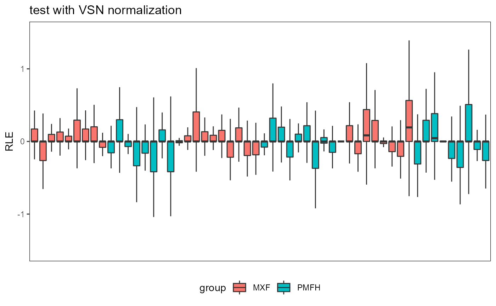
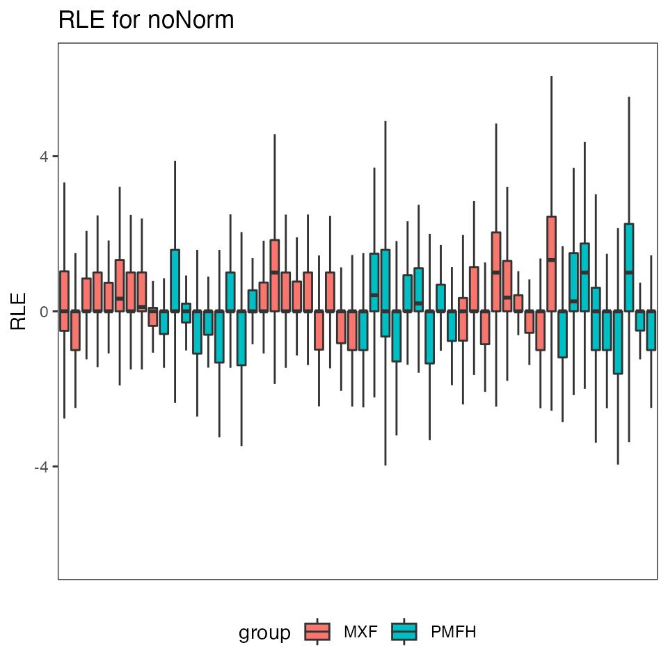
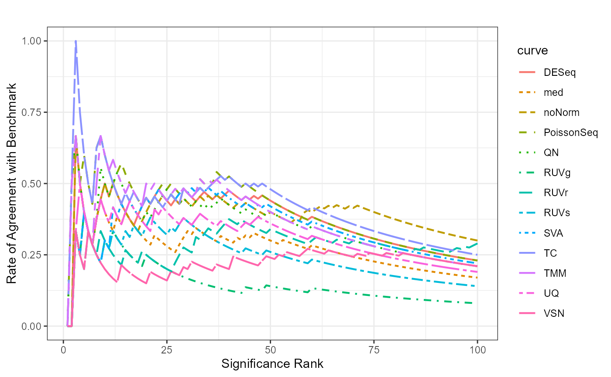

PRECISION.SEQ Example Usage
VSN_Example.RmdTest data is normalized by Variance Stabilizing Normalization (VSN) using function justvsn, and the negative normalized values are set to 1. Voom-limma is used for the differential expression analysis.
vsn.norm <- justvsn(data.test)
vsn.norm <- ifelse(vsn.norm<0, 1, vsn.norm)
vsn.pval <- DE.voom(vsn.norm, data.group)Empirical Data Analysis
Relative Log Expression Plot
fig.RLE(data.test, data.group, "test without normalization")
#> Warning: Removed 367 rows containing non-finite values (stat_boxplot).
fig.RLE(vsn.norm, data.group, "test with VSN normalization")
#> Warning: Removed 1465 rows containing non-finite values (stat_boxplot).
Scatterplot for FNR and FDR
truthgene <- DE.voom(data.benchmark, data.group)$id.list
fig.FDR_FNR(data.test, data.group,
c("norm.TMM", "norm.TC", "norm.UQ", "norm.med",
"norm.DESeq", "norm.RUVg", "norm.RUVs", "norm.RUVr",
"norm.SVA", "norm.PoissonSeq", "norm.QN", "norm.none", "norm.vsn"),
truthgene,
new.norm.list = vsn.pval$id.list)
#> Number of significant surrogate variables is: 1
#> Iteration (out of 5 ):1 2 3 4 5 328 genes has been filtered because they contains too small number of reads across the experiments.
pip.statistics(raw = data.test, groups = data.group,
truth = truthgene, norm.method = "norm.vsn",
new.norm.list = vsn.pval$id.list)
#> $TPR
#> [1] 0.440678
#>
#> $FPR
#> [1] 0.1735113
#>
#> $FDR
#> [1] 0.8666667
#>
#> $FNR
#> [1] 0.559322Concordance at The Top Plot
fig.CAT(MethodsCompare = c("norm.TMM", "norm.TC", "norm.UQ", "norm.med",
"norm.DESeq", "norm.RUVg", "norm.RUVs", "norm.RUVr",
"norm.SVA", "norm.PoissonSeq", "norm.QN", "norm.none"),
MethodNew = "norm.vsn", pvalues = vsn.pval$p.val)
#> Number of significant surrogate variables is: 1
#> Iteration (out of 5 ):1 2 3 4 5 328 genes has been filtered because they contains too small number of reads across the experiments.
Dendrogram for clustering p-values
fig.dendrogram(MethodsCompare = c("norm.TMM", "norm.TC", "norm.UQ", "norm.med",
"norm.DESeq", "norm.RUVg", "norm.RUVs", "norm.RUVr",
"norm.SVA", "norm.PoissonSeq", "norm.QN", "norm.none"),
MethodNew = "norm.vsn", pvalues = vsn.pval$p.val)
#> Number of significant surrogate variables is: 1
#> Iteration (out of 5 ):1 2 3 4 5 328 genes has been filtered because they contains too small number of reads across the experiments.
Simulation Data Analysis
Data Simulation
set.seed(12345)
sim.groups = c(rep('MXF',27),rep('PMFH',27))
simulated <- simulated.data(proportion_L = 0.15, proportion_R = 0.25,
median_L = 2, median_R = 4, numsets = 100)Boxplot for FDR and FNR
summary.plot = function(simulation.data, norm.method, num.data = 100) {
FNR = FDR = c()
for (i in 1:num.data) {
benchmark.simu = simulation.data[[i]]$simulated_benchmark
test.simu = simulation.data[[i]]$simulated_test
truthgene <- DE.voom(benchmark.simu, sim.groups)$id.list
if (is.null(truthgene)){
FNR <- c(FNR, 1)
FDR <- c(FDR, 1)
} else {
if (norm.method == "norm.vsn"){
vsn.norm <- justvsn(test.simu)
vsn.norm <- ifelse(vsn.norm<0, 1, vsn.norm)
vsn.pval <- DE.voom(vsn.norm, sim.groups)
stat <- pip.statistics(test.simu, sim.groups, truth = truthgene,
DE.method="DE.voom", norm.method="norm.vsn",
new.norm.list = vsn.pval$id.list)
} else {
stat <- pip.statistics(test.simu, sim.groups, truth = truthgene,
DE.method="DE.voom", norm.method=norm.method)
}
FNR <- c(FNR, stat$FNR)
FDR <- c(FDR, stat$FDR)
}
}
return(list(FNR = FNR, FDR = FDR))
}
summary.plot.scenario = function(s){
sum.none = summary.plot(s, "norm.none")
sum.TMM = summary.plot(s, "norm.TMM")
sum.TC = summary.plot(s, "norm.TC")
sum.UQ = summary.plot(s, "norm.UQ")
sum.med = summary.plot(s, "norm.med")
sum.DESeq = summary.plot(s, "norm.DESeq")
sum.PoissonSeq = summary.plot(s, "norm.PoissonSeq")
sum.QN = summary.plot(s, "norm.QN")
sum.SVA = summary.plot(s, "norm.SVA")
sum.RUVg = summary.plot(s, "norm.RUVg")
sum.RUVr = summary.plot(s, "norm.RUVr")
sum.RUVs = summary.plot(s, "norm.RUVs")
sum.vsn = summary.plot(s, "norm.vsn")
return(list(none.FDR = sum.none$FDR,
TMM.FDR = sum.TMM$FDR,
TC.FDR = sum.TC$FDR,
UQ.FDR = sum.UQ$FDR,
med.FDR = sum.med$FDR,
DESeq.FDR = sum.DESeq$FDR,
PoissonSeq.FDR = sum.PoissonSeq$FDR,
QN.FDR = sum.QN$FDR,
SVA.FDR = sum.SVA$FDR,
RUVg.FDR = sum.RUVg$FDR,
RUVr.FDR = sum.RUVr$FDR,
RUVs.FDR = sum.RUVs$FDR,
vsn.FDR = sum.vsn$FDR,
none.FNR = sum.none$FNR,
TMM.FNR = sum.TMM$FNR,
TC.FNR = sum.TC$FNR,
UQ.FNR = sum.UQ$FNR,
med.FNR = sum.med$FNR,
DESeq.FNR = sum.DESeq$FNR,
PoissonSeq.FNR = sum.PoissonSeq$FNR,
QN.FNR = sum.QN$FNR,
SVA.FNR = sum.SVA$FNR,
RUVg.FNR = sum.RUVg$FNR,
RUVr.FNR = sum.RUVr$FNR,
RUVs.FNR = sum.RUVs$FNR,
vsn.FNR = sum.vsn$FNR))
}
boxplot.FDFN = function(s, main){
s = summary.plot.scenario(s)
par(mar = c(7, 3, 3, 3), cex = 0.9)
boxplot(s$none.FDR, s$none.FNR,
s$TC.FDR, s$TC.FNR,
s$UQ.FDR, s$UQ.FNR,
s$med.FDR, s$med.FNR,
s$DESeq.FDR, s$DESeq.FNR,
s$PoissonSeq.FDR, s$PoissonSeq.FNR,
s$TMM.FDR, s$TMM.FNR,
s$QN.FDR, s$QN.FNR,
s$SVA.FDR, s$SVA.FNR,
s$RUVg.FDR, s$RUVg.FNR,
s$RUVs.FDR, s$RUVs.FNR,
s$RUVr.FDR, s$RUVr.FNR,
s$vsn.FDR, s$vsn.FNR,
at = c(1,2,4,5,7,8,10,11,13,14,16,17,19,20,22,23,25,26,28,29,31,32,34,35,37,38),
las = 2, ylab = "Log2 Count",
pch = 16, cex = 0.5,
col = c("white", "grey"), main = main)
axis(1, at = c(1.5, 4.5, 7.5, 10.5, 13.5, 16.5, 19.5, 22.5, 25.5, 28.5, 31.5, 34.5, 37.5),
labels = c("No Norm", "TC", "UQ", "Med", "DESeq",
"PoissonSeq", "TMM", "QN", "SVA",
"RUVg", "RUVs", "RUVr", "vsn"), las = 2, tck = 0)
legend("bottomleft",c("False Discovery Rate", "False Negative Rate"), bty = "n",
pch = c(0, 15), cex = 1, col = c("grey", "grey"))
}
boxplot.FDFN(simulated, main = "DE = 20%, median mean-diff = 3")